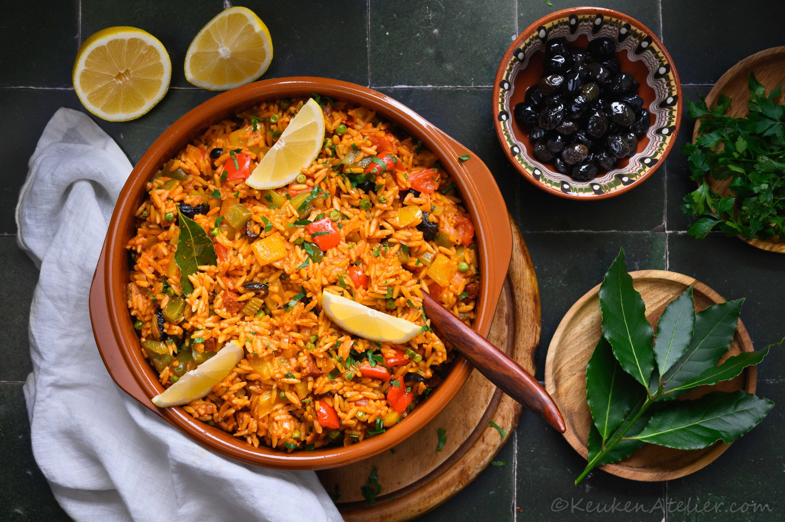

Paela met kip

Ingredienten
- 200gr chorizo worst
- 1 ui
- 400 gr kippendijen
- 200gr grote garnalen
- 20 venusschelpen of kokkels
- 300gr paella rijst
- 200gr erwtjes
- 2 paprikas
- 1 rode
- Snuf gerookte paprikapoeder
- 1 zakje saffraandraadjes
- 1l kippenbouillon
- 1 citoren
- verse peterselie
Bereiding
- Snijd de chorizo in stukjes.
Bak deze (zonder olie) in een grote paella of wokpan.
Als de chorizo iets krokant is geworden haal je de stukjes uit de pan en laat je ze uitlekken.
Laat het vet in de pan
- Voeg de blokjes kip toe aan de pan en bak mee tot deze rondom aangebakken is (hij hoeft nog niet gaar te zijn).
- Gebruik je rauwe garnalen dan kun je ze even meebakken met de kip.
- Voeg de paprika’s in blokjes, ui en rode peper toe en roerbak even mee.
- Doe dan de rijst erbij en schep goed door.
- Voeg de saffraan toe aan de bouillon.
- Voeg de tomatenblokjes en paprikapoeder toe en schep er 2 soeplepels bouillon bij en laat dit al roerend door de rijst opnemen.
Herhaal dit tot de rijst ongeveer gaar is.
Dit duurt ca. 18 minuten. Het kan zijn dat je wat bouillon over hebt.
- Doe halverwege ook de erwtjes (bevroren), gebakken chorizo en de venusschelpen erbij en laat deze garen in de paella.
Doe indien mogelijk een deksel op de pan of doe de Big green Egg dicht.
Als je voorgekookte garnalen gebruikt kun je die samen met de erwtjes en kokkels toevoegen zodat deze ook meewarmen.
- Proef of de paella goed op smaak is en voeg eventueel een beetje peper, zout of iets pittigs toe.
- Besprenkel de paella voor het serveren met wat citroen en garneer de paella met schijfjes citroen en peterselie.
- Tips: Ik maakte deze paella op de Big Green Egg maar je kunt hem natuurlijk ook gewoon op je fornuis bereiden.